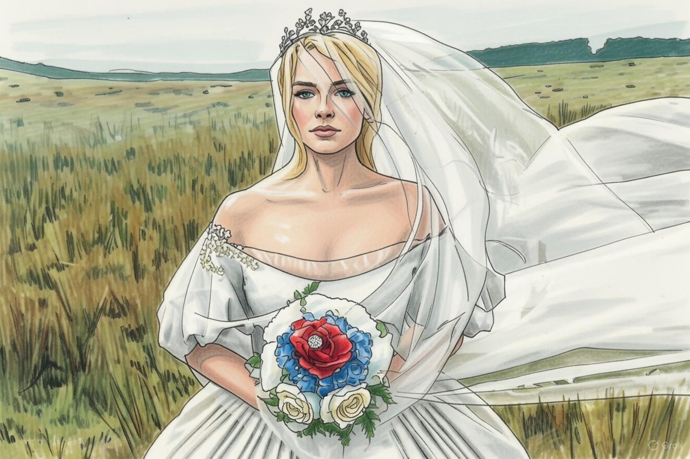

Si pensabas que el cine gótico era cosa del pasado, estás muy equivocada. Hoy, la estética oscura, los romances imposibles y los mundos extrañamente bellos vuelven a estar en el centro de la escena cinematográfica, pero con un giro moderno que lo hace más visceral y emocionante que nunca.
En Poor Things, por ejemplo, encontramos una historia que mezcla lo grotesco con lo poético. Las emociones son exageradas, los personajes parecen salidos de un sueño febril y la fotografía te atrapa desde el primer minuto. Es como si cada plano te susurrara “no mires demasiado, o te perderás en este universo de locura y belleza”. La dirección de arte y los colores, intensos y casi eléctricos, crean un contraste perfecto entre lo romántico y lo extraño, recordándonos que lo gótico no es solo sombras y castillos, sino también pasión y riesgo creativo.
Por otro lado, Wuthering Heights sigue mostrando que los clásicos nunca mueren. Esta adaptación revive el drama de Heathcliff y Catherine con un enfoque más contemporáneo, sin perder esa atmósfera cargada de tormenta, secretos y miradas que lo dicen todo. Aquí, el viento del páramo es casi un personaje más, y cada escena parece un cuadro que respira soledad, deseo y desesperanza.
Lo interesante de este “nuevo romanticismo gótico” es cómo estas películas combinan lo viejo con lo nuevo. Recuperan la tradición literaria y cinematográfica del siglo XIX, pero con sensibilidad actual: los conflictos emocionales son más complejos, los personajes más humanos y los mundos que construyen no solo impresionan, sino que también hacen reflexionar. Es un cine que juega con la belleza y el horror, con la emoción y la estética, creando experiencias que se sienten personales y colectivas a la vez.
Si eres fan del cine que te hace sentir, que te atrapa en universos únicos y que mezcla lo oscuro con lo poético, este renacer del gótico moderno es para ti. No es solo nostalgia: es revolución estética, emoción a flor de piel y un recordatorio de que, incluso en la penumbra, el romanticismo nunca muere.

Donde cada historia tiene su universo.
Carmen Orts sobre Podrías profundizar más.
Valeria Moreno sobre Muy chulo todo, me encanta la web.
Victor Pérez sobre Las fotos podrían ser mejores, curratelo un poquito más.
Xavier Sempere sobre ¿Puedes hacer un artículo sobre algo de Almodovar? soy muy fan.